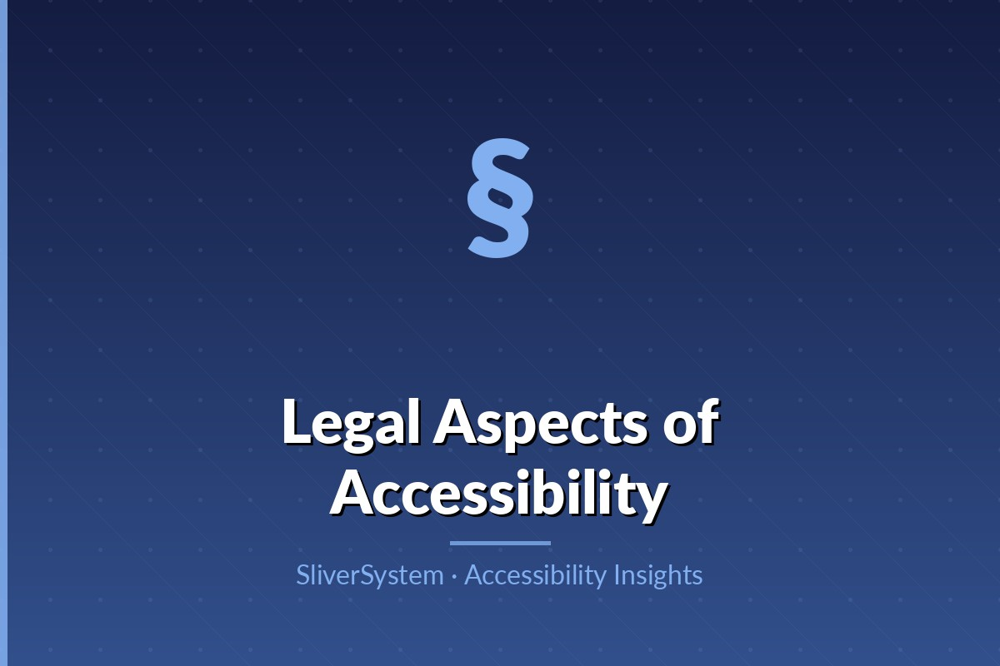

How to publish documents that are readable, navigable, and assistive-tech friendly.

Most PDF accessibility issues originate in source files. Use heading styles, list structures, table headers, and meaningful link text in the original document editor. Avoid manually styled text that looks like headings but has no semantic role. Building structure early reduces remediation time and improves consistency.
A tagged PDF includes the semantic map screen readers need. Correct reading order is critical, especially in multi-column layouts, sidebars, and footnotes. Decorative elements should be marked appropriately to reduce noise. Document language metadata and title settings improve pronunciation and identification in assistive software.
Images require concise alt text focused on purpose. Complex charts should include text summaries and data tables when necessary. Tables need clear headers and simple structures; merged cells and nested tables often break screen reader interpretation. If a document is data-heavy, consider providing an accessible HTML alternative.
Interactive PDF forms should have labeled fields, keyboard operability, and clear instructions. Error messaging and required-field indicators must be explicit and machine-readable. E-signature flows should support assistive technology and not rely on inaccessible drag-and-drop gestures.
Before publishing, run accessibility checks and perform manual review with a screen reader. Host documents in contexts that explain format and provide alternatives if needed. Track document versions and re-validate accessibility when templates change. A sustainable document policy prevents inaccessible files from reappearing over time.
Accessible products are built when design, engineering, content, and research teams treat inclusion as a shared responsibility from day one.